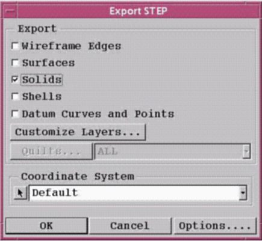

Use
the following procedure to export STEP files from Pro/ENGINEER for
import into MCAD Bridge.
Procedure
- Choose to
display the Export STEP dialog box (Figure 1).
Figure 1. Export STEP Dialog Box
- Accept
the default filename
- Ensure that the Export STEP
dialog box has Solids selected and that Shells is not selected (it
is by default).